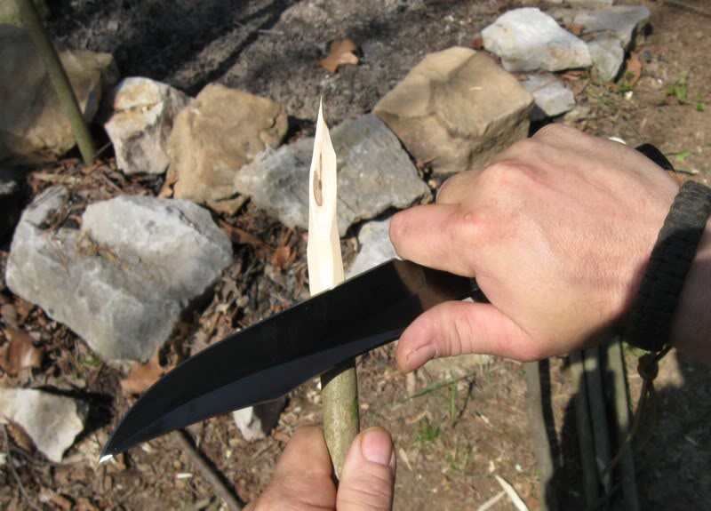
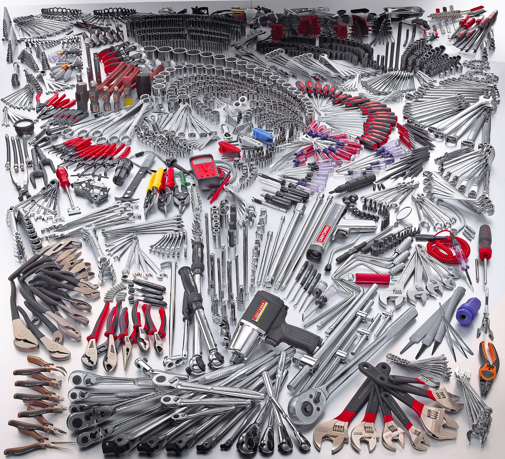

Your browser doesn't support the features required by impress.js, so you are presented with a simplified version of this presentation.
For the best experience please use the latest Chrome, Safari or Firefox browser.
GRUNT
The JavaScript Task Runner
- Aaron Frost
- › @js_dev
- › tweet your questions
Agenda
» Live Demo - Feedback app
» JS Tasks
» CSS Tasks
» HTML Tasks
» Image Tasks
» Test Tasks
» Build
» Commit
» Keystroke
Most of us use these... :(

When we really need these... :)

GRUNT gives us the one API for all of our tasks
Built by:
@cowboy - Ben Alman - bocoup.com
Too Many Projects - over 300
Copy tasks between projects - 1000s of lines
GRUNT let's us put all our tasks in one place.
GRUNT let's us exploit the knowledge of the community .
GRUNT gives us one powerful build
that is flexible enough to serve all our teams.
» grunt-cli is a global install
* global runner, it runs whatever grunt you have installed
** each project has their own grunt install
» grunt is a local install
* --save-dev saves the dependency to your package.json file
** each project has their own grunt install
what is grunt?
installation